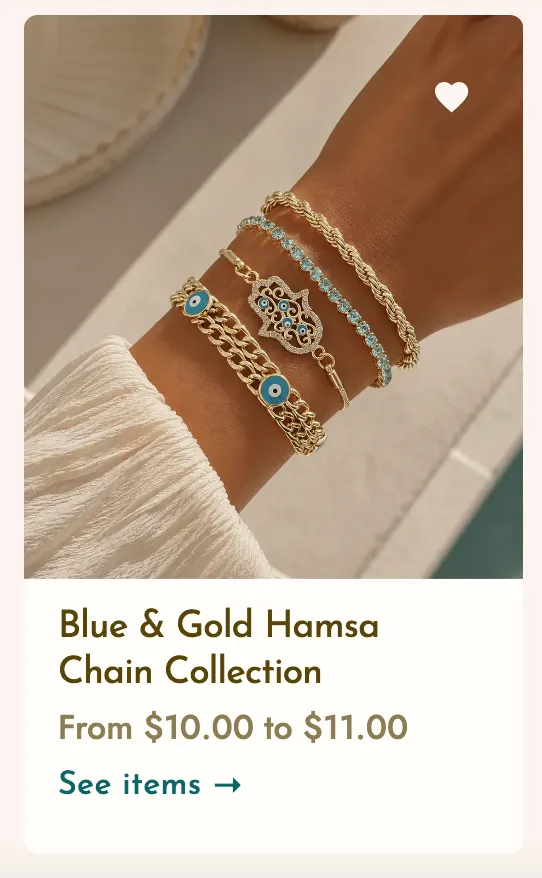
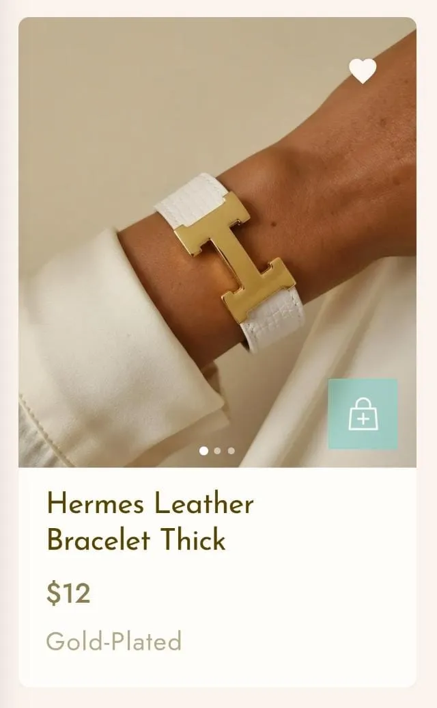

Turquoise Accessories is a full brand identity and e-commerce web app for a Lebanese accessories brand — founded, designed, and built end to end, from the first Figma wireframes through to a live store with its own admin dashboard for day-to-day management. The scope covered brand identity, a typography system, e-commerce UI/UX, and the live frontend deployment itself, with every layout, navigation pattern, and product flow worked out and refined by hand rather than dropped in from a template.
Turquoise Accessories launched as a boutique local brand, building a highly engaged organic community across social media. But relying purely on Instagram and Facebook direct messages for sales created a real operational bottleneck. The brand needed a self-contained digital space of its own — a fast, responsive e-commerce app built to handle high-volume product browsing while accommodating local buying habits, like a streamlined cash-on-delivery checkout.
Fragmented Database Workflows
The Problem
The native database backend for uploading multi-attribute inventory, linking asset URLs, and managing relational IDs was fragmented, slow, and prone to formatting errors during day-to-day stock changes.
The Solution
Designed and built a dedicated internal Admin Dashboard for backend operations — unifying product management onto a single page, with drag-and-drop image uploading, visual editing, and a real-time inventory search bar. It removed the need to manually query ID keys and noticeably sped up daily internal workflows.
The custom Admin Dashboard — drag-and-drop uploads and real-time inventory search, built to replace the old fragmented workflow.
Multi-Attribute Navigation Friction
The Problem
The inventory spans overlapping attributes — matching categories like Necklaces with material compositions like Gold-Plated, Stainless Steel, or Vintage. A standard flat menu forced users to toggle through repetitive pages just to confirm material, causing real drop-off.
The Solution
Built a dynamic, dual-layered navigation: a sticky, interactive horizontal tab structure lets users swipe or click between material types instantly, with no full page reload. At the component level, the frontend pulls directly from the admin panel's choices, rendering a clear material label on every product card beneath the price.
Sticky material tabs — Gold-Plated, Stainless Steel, Vintage — with the active material labeled directly on each product card.
Visual Presentation Bottlenecks
The Problem
Campaign photography often features multi-piece styled jewelry stacks in a single shot. Showing these only as individual product listings confused users who wanted the entire coordinated look, adding unnecessary searching.
The Solution
Created a "Shop the Look" system that treats styled group photography as its own Collection Card, separate from normal product links. Clicking it routes to a page where every item in that photo is grouped together, so users can browse materials and add multiple pieces from one photo straight to their cart.





Beyond the storefront, the project includes a full admin dashboard built for daily management — adding and editing products, organizing them by category and material, curating homepage sections, and tracking orders — so the site can be run day to day without touching any code.

To bring the Figma blueprints to a live production state safely, the build followed a structured, professional development pipeline:
AI-Assisted Engineering
Used Claude AI to translate the visual layouts into structured component architecture with React, Next.js 14, and TypeScript.
Version Control & Repository Management
Managed the full source code through GitHub — handling code branches, testing, and version history safely throughout the build.
Headless Backend & Live Storage
Configured a Supabase database to securely manage live inventory quantities, product metadata, visual uploads, and incoming customer orders.
Performance & Cloud Hosting
Built an asset pipeline converting all photography to compressed WebP for fast mobile loading. The app is deployed and hosted on Vercel, connected directly to the GitHub main branch for automated live updates.
Live Deployment
A fully operational, installable Progressive Web App running on Vercel.
Community Scale
A combined audience of 23,000+ followers across Instagram and Facebook, built through targeted visual marketing and consistent content layout.
Localized Logistics
A streamlined, single-page checkout built around local cash-on-delivery orders.
See the store running live, end to end.
Visit Live Site →